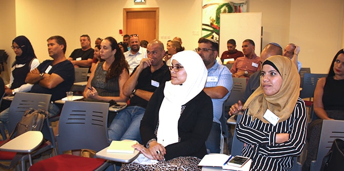
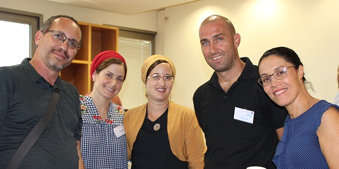

ביום חול עטוף חגיגיות, בקו התפר העדין שבין יום הכיפורים לחג הסוכות, התכנסה במרכז מנדל למנהיגות בנגב הקהילה כולה. עשרות בוגרים מכל התוכניות, עמיתים שעומדים בפתחה של תוכנית חדשה ואנשי הסגל והצוות של המרכז. מפגש הקהילה המיוחד והנדיר הזה לא בישר רק על תחילת שנת פעילות חדשה אלא היווה נקודת ציון לביסוסה של קהילת הבוגרים שלנו.

ד"ר עדי ניר שגיא, מנהלת המרכז, פתחה בשיר של המשוררת היפנית בת ה-92 מספרה "הבקר בא תמיד" והדגישה כי בניית תמונות עתיד עם תקווה, משמעות ואומץ מייצרת מציאות חדשה – והינה תשתית עשיית קהילת בוגרי מנדל לשינוי איכות החיים במרחב. שלומי בראט, נציג הבוגרים, ביטא את תקוות הבוגרים לשוב ולהתאחד כקהילה מובילה בנגב, קהילה פועלת, מחויבת עמוקות וחדשנית. ישראל שורק, חבר סגל ומרכז תחום הבוגרים, טבע את המונח: "להמשיך מחדש" הדורש לחשוב, לברר, לנתח להעמיק ולפעול בשביל לשנות את המציאות.

המילים "חדש", "מחודש", "התחלה" קיבלו בעצמן מלבוש חדש. נושא זה העמיק בהרצאתו של ד"ר משה מאיר שעסקה בשאלה: "האם באמת אפשר להתחיל מחדש"? לאחר מכן הנחו הבוגרים סדנאות בנושא "המשך מחודש" או "חידוש-המשכי", שכן לא פוזרו קלישאות וסיסמאות אודות התחדשות אלא נבחנו ברצינות גם החסמים האישיים והחברתיים של שינוי ממשי בחיינו, חיוני ככל שיהיה.
כאשר ערב מלא תקווה זה הסתיים חשנו שהמלאכה החשובה של בניית הקהילה שוב החלה. ימי שלישי אחר הצהריים ובערב "הופקעו" לטובת קהילת הבוגרים. מי ייתן ומימושה של התקווה לא יאחר לבוא.
{kind=link}
{kind=link}
{kind=link}